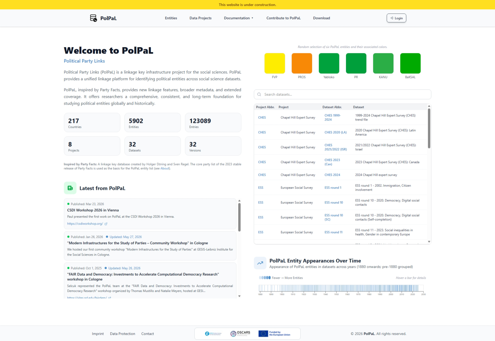
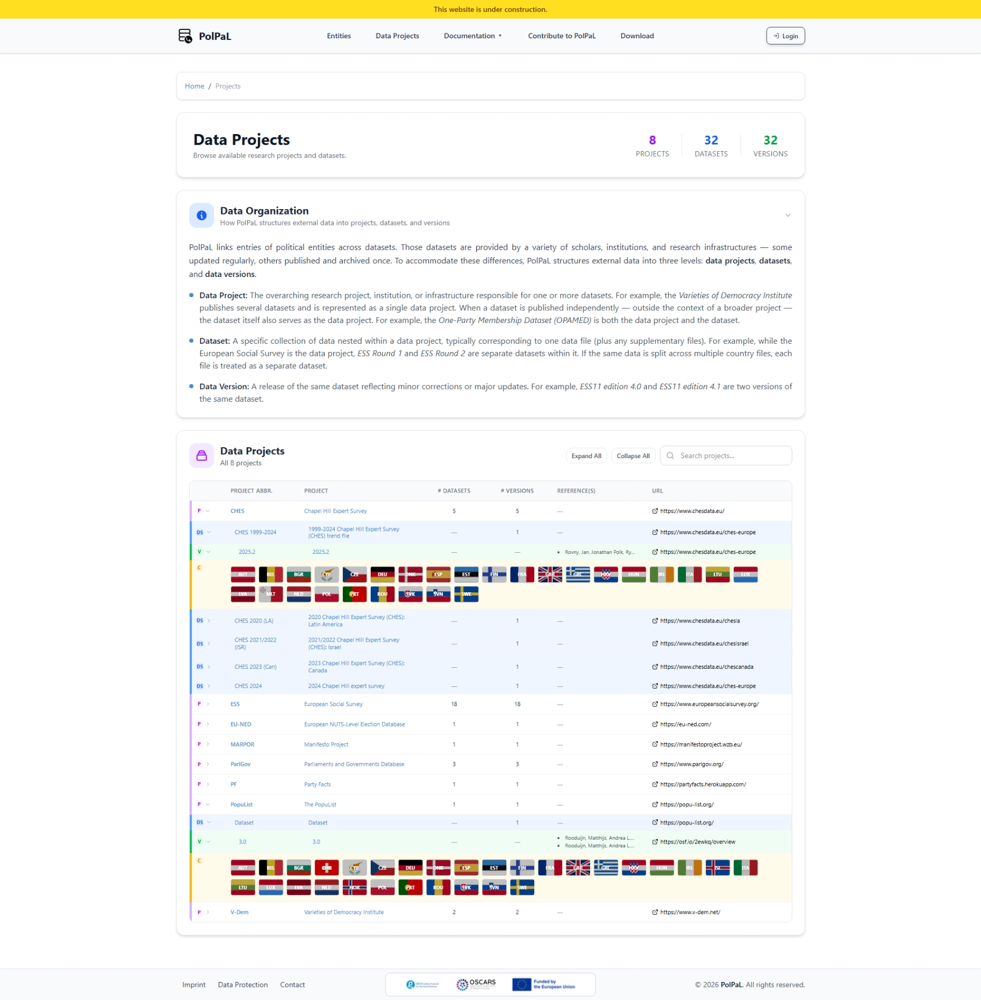
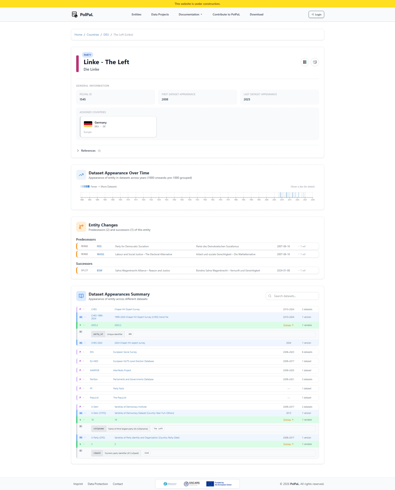
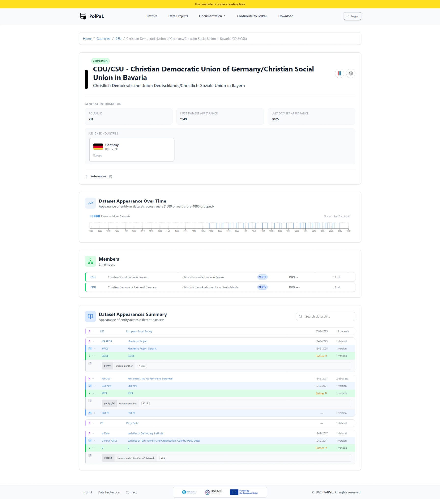
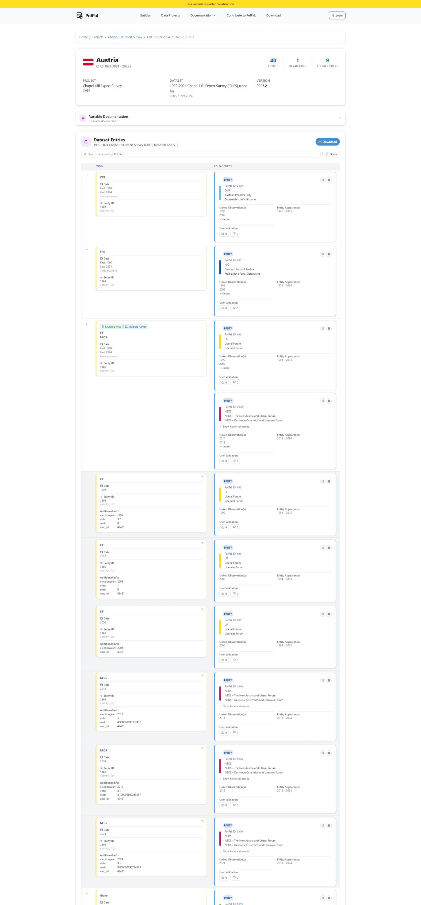
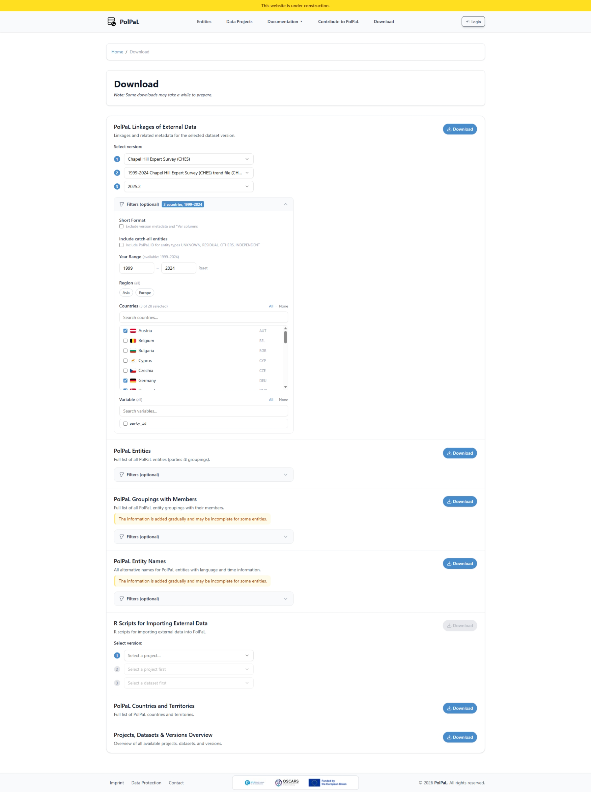

Welcome to PolPaL
Political Party Links
Political Party Links (PolPaL) is a linkage key infrastructure project for the social sciences. PolPaL provides a unified linkage platform for identifying political entities across social science datasets.
PolPaL, inspired by Party Facts, provides new linkage features, broader metadata, and extended coverage. It offers researchers a comprehensive, consistent, and long-term foundation for studying political entities globally and historically.
First look
A glimpse of what's coming

The homepage of PolPaL provides an overview of statistics, latest news, and a searchable dataset index.

The projects page provides an overview of integrated data projects, datasets, and data versions within PolPaL.

The PolPaL Party entity page provides information about political parties and their appearances across datasets.

The PolPaL Grouping entity page provides information about political groupings and their appearances across datasets.

Browse linkages between dataset entries and PolPaL entities.

Download linkage keys, PolPaL entities, and additional information from PolPaL.
Integration roadmap
Data Projects & Datasets
The following datasets are planned for integration over the coming months. Each will be linked to PolPaL entities, making cross-dataset analysis straightforward.
The team
Who we are
 LK
LK PS
PSPaul Bederke
GESIS - Leibniz Institute for the Social Sciences
Unter Sachsenhausen 6-8
50667 Cologne
Germany